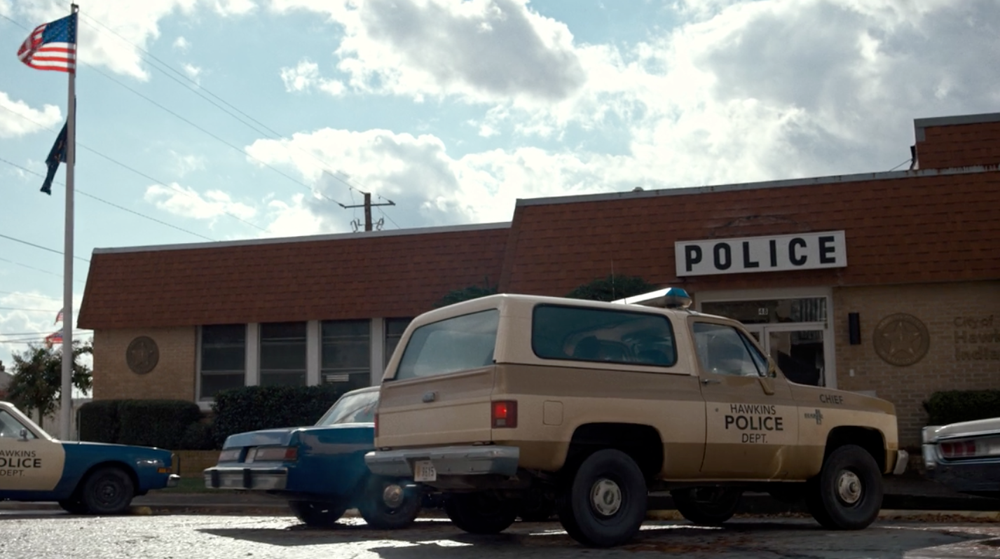
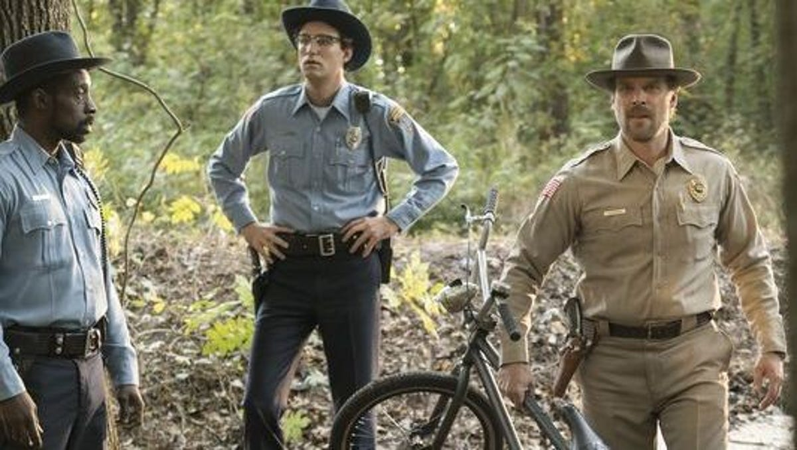

Неизвестно как давно в Хоукинсе существует данный полицейский участок. Джим Хоппер стал шерифом полиции Хоукинса в 1979 году, когда развелся с женой после смерти маленькой дочери и приехал из Нью-Йорка. Сам он говорил, что худшее что случалось с ним за четыре года службы (с 1979 по 1983 г.), было нападение совы на прическу Элеонор Грейспи, когда птица приняла её волосы за гнездо.
 «Утро для кофе и наблюдений», — постоянно повторяет Хоппер, которому объективно нечем заняться в Хоукинсе. До открытия Врат ему приходилось расследовать преимущественно кражи садовых гномов, после — работать «в поле». Так что работа в полицейском участке так никогда и не закипает.
Местом съемок здания полицейского участка было выбрано здание по адресу 48 Pray Street в Дугласвилле, штат Джорджия. Там снималась как понорама здания, так и внутренее помещения полиции.